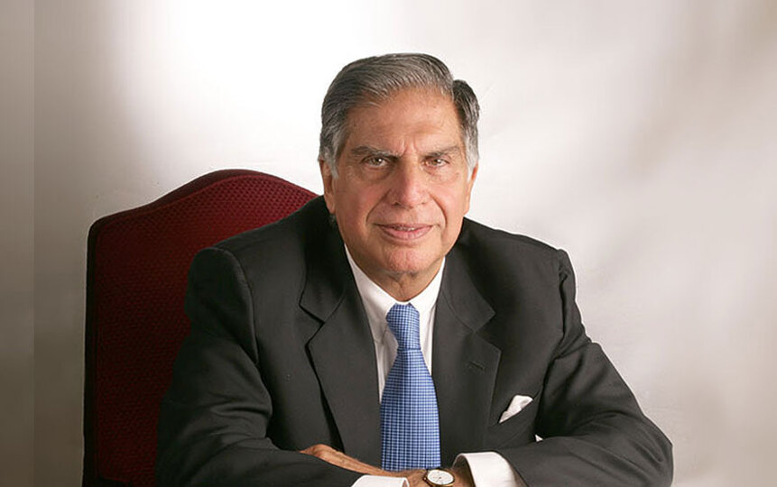

|  |
Ratan TataChairman Emeritus, Tata Sons and Tata GroupBusinessman, Philanthropist |
Ratan Naval Tata (born 28 December 1937) is a
Parsi Indian businessman, philanthropist and former chairman of Tata
Sons. He was a chairman of the Tata Group from 1990 to 2012, and
interim chairman from October 2016 through February 2017. He continues
to head its charitable trusts.In 2008, he received the
Padma Vibhushan, the second highest civilian honour in India,
after receiving the Padma Bhushan, the third highest civilian honour in
2000.
💠Early life and Education
Ratan Tata was born in Bombay, now Mumbai, during the British Raj, into
a Parsi Zoroastrian family, on 28 December 1937..He studied at the
Campion School, Mumbai till the 8th class. After which, he studied at
the Cathedral and John Connon School in Mumbai, the Bishop Cotton School
in Shimla, and the Riverdale Country School in New York City, which he
graduated from in 1955.After graduating from high school, Tata enrolled
in Cornell University, from which he graduated with a bachelor's degree
in architecture in 1959. In 2008, Tata gifted Cornell $50 Million,
becoming the largest international donor in the university's history.
❇️ In the 1970s, Tata was given a managerial position in the Tata group.
He achieved initial success by turning the subsidiary National Radio and
Electronics (NELCO) around, only to see it collapse during an economic
slowdown.
❇️ In 1991, J. R. D. Tata stepped down as chairman of Tata Sons, naming
him his successor. Initially, Tata faced stiff resistance from the heads
of various subsidiaries, who had a large amount of operational freedom
under the senior Tata's tenure.
❇️ In response, Tata implemented a number of policies designed to
consolidate power, including the implementation of a retirement age,
having subsidiaries report directly to the group office, and requiring
subsidiaries to contribute their profit to building the Tata group
brand.
❇️ Tata prioritised innovation and delegated many responsibilities to
younger talent. Under his leadership, overlapping operations between
subsidiaries were streamlined into company-wide operations, with the
group exiting unrelated businesses to take on globalisation.
❇️ During the 21 years Tata led the Tata Group, revenues grew over 40
times, and profit over 50 times.When he took over the company, sales
overwhelmingly comprised commodity sales, but at the end of his tenure,
the majority of sales came from brands.
❇️ He had Tata Tea acquire Tetley, Tata Motors acquire Jaguar Land
Rover, and Tata Steel acquire Corus. These acquisitions repositioned
Tata from a largely India-centric group into a global business, with
over 65% of revenues coming from operations and sales
internationally.
❇️ He also conceptualized and spearheaded the development of the Tata
Nano car, which helped put cars at a price-point within reach of the
average Indian consumer.Tata Motors has since rolled out the first batch
of Tigor Electric Vehicles from its Sanand Plant in Gujarat, which Tata
has described as "fast-forward[ing] India's electric dream.
| Year | Name | Awarding organisation |
|---|---|---|
| 2001 | Honorary Doctor of Business Administration | Ohio State University |
| 2004 | Medal of the Oriental Republic of Uruguay | Government of Uruguay |
| 2005 | International Distinguished Achievement Award | B'nai B'rith International |
| 2006 | Honorary Doctor of Science | Indian Institute of Technology Madras |
| 2007 | Honorary Fellowship | The London School of Economics and Political Science |
| 2008 | Honorary Doctor of Science | University of Cambridge |
| 2009 | Life Time Contribution Award in Engineering for 2008 | Indian National Academy of Engineering |
| 2010 | Legend in Leadership Award | Yale University |
| 2012 | Grand Cordon of the Order of the Rising Sun | Government of Japan |
| 2013 | Ernst and Young Entrepreneur of the Year – Lifetime Achievement | Ernst & Young |
| 2014 | Honorary Knight Grand Cross of the Order of the British Empire (GBE) | Queen Elizabeth II |
| 2015 | Honorary Doctor of Automotive Engineering | Clemson University |
| 2016 | Commander of the Legion of Honour | Government of France |
| 2018 | Honorary Doctorate | Swansea University |
| 2022 | Honorary Doctorate of Literature | HSNC University |
| 2023 | Honorary Officer of the Order of Australia (AO) | King Charles III |